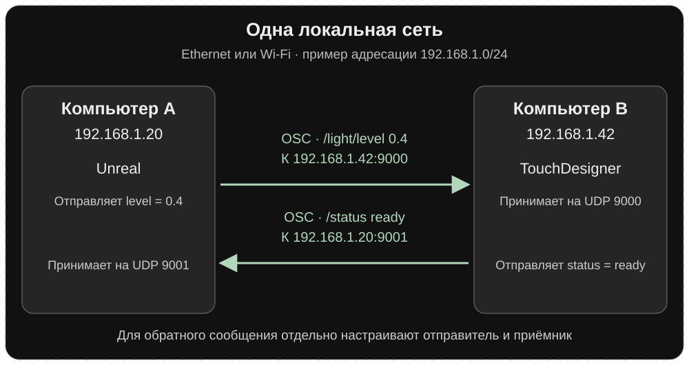

Протоколы передачи
Игрок входит в зону в Unreal Engine, и на соседнем экране меняется графика. Зритель двигает ползунок в браузере, и в зале плавно загорается свет. В каждом случае одна система передаёт данные, а другая решает, как на них отреагировать. Разберём эту связь от одного сообщения до адресов реальных приборов.
Как среды договариваются
Сцена в Unreal знает, где находится игрок. TouchDesigner умеет строить графику и превращать числа в управляющие каналы. Световой прибор читает последовательность значений из своей линии. Чтобы связать эти задачи, нужно решить, где рождается сигнал, как он передаётся и что означает в каждом звене.
- Источник
Действие, датчик или таймлайн - Сообщение
Адрес, имя и значение - Передача
Выбранный протокол - Обработка
Проверка и преобразование - Результат
Графика, звук или свет
Полезно разделять транспорт, формат данных и смысл сообщения. Например, браузер держит соединение WebSocket, передаёт текст в формате JSON, а TouchDesigner читает поле value как яркость от 0 до 1. Программы понимают JSON, но правило «1 означает максимальную яркость текущей сцены» устанавливает команда проекта.
До сборки договоритесь об имени сигнала, диапазоне, единицах и направлении передачи. Если один человек передаёт цвет в 0–255, а другой ждёт 0–1, настройки связи могут быть правильными, но результат будет выглядеть сломанным. Удобно записать рядом пример сообщения и ожидаемую реакцию.
Игрок приближается к световому объекту
Представим инсталляцию, где движение в игре меняет яркость физического светильника. Unreal измеряет расстояние от игрока до объекта. Команда договаривается, что /light/level несёт число от 0 до 1. У границы зоны оно равно 0, рядом с объектом равно 1. При значении 0.4 TouchDesigner целится в 40% управляющего диапазона и плавно подводит к нему свет.
- Unreal
Игрок приближается к объекту - OSC по UDP
/light/levelсо значением0.4 - TouchDesigner
Проверяет диапазон и сглаживает переход - Art-Net → DMX512
Узел передаёт значение 102 на канал диммера - Светильник
Меняет яркость по своей кривой
В этом примере диммер 8-битный, поэтому 0,4 × 255 даёт 102. Тот же нормализованный сигнал можно подать на яркость проекции. Если данные перестали приходить, по цепочке видно, что проверять: сообщение в Unreal, вход в TouchDesigner, затем выход и адрес прибора. DMX Out CHOP.
| Тип сигнала | Пример | Что предусмотреть |
|---|---|---|
| Событие | Посетитель вошёл в зону. | Нужно ли подтверждение и как обработать повтор? |
| Состояние | Текущая сцена называется intro. | После подключения получатель должен узнать, какая сцена активна. |
| Поток значений | Положение ручки меняется от 0 до 1. | Ограничьте частоту, определите поведение при паузе и сгладьте скачки. |
| Поток кадров | Видео из Unreal поступает в микшер. | Согласуйте размер, частоту кадров, задержку и возможности сети или видеовыхода. |
Go Robot на Cinedans
В интерактивной танцевальной инсталляции Go Robot рисунок на сцене меняется вместе с движением танцора. Kinect отслеживает тело, TouchDesigner использует координаты опорных точек и привязывает к ним графические эффекты. Проследите в видео за руками танцора. Связь с трекингом позволяет сохранить реакцию даже тогда, когда исполнитель меняет движение во время импровизации. Авторы специально отделили входные данные от визуальных эффектов, чтобы потом можно было подключить другой трекер. Схема и разбор команды Go Robot.
- Танцор меняет положение
- Kinect отслеживает точки тела
- TouchDesigner привязывает эффекты к координатам
- Зритель видит графику, связанную с жестом
Дальше в лекции встретятся разные масштабы связи. В Hyperwish движение шара превращается в навигацию, в Deep Dream Act II общий таймлайн соединяется с движением зрителей, а в PlexPixel изображение становится светом на костюме. Рассматривая видео, отмечайте источник, сообщение, получатель и видимый результат.
IP и порт
IP указывает, куда отправлять данные. Порт помогает выбрать приложение или службу на этом устройстве. При первом тесте на одном компьютере используйте адрес 127.0.0.1. Если TouchDesigner запущен на другом компьютере, укажите его сетевой IP. Когда веб-пульт открыт на телефоне, localhost указывает на телефон, поэтому в адресе страницы нужен IP компьютера с TouchDesigner.
В локальной сети проверьте доступ между устройствами, правильный сетевой интерфейс и разрешение на нужный входящий порт. При нескольких приложениях на одном компьютере проверьте, какой процесс уже слушает этот порт. Номера 9000 и 9980 в этой лекции выбраны для примеров.

Оба компьютера подключены к одной сети через коммутатор или Wi-Fi. В первом направлении Unreal отправляет значение в TouchDesigner. Во втором TouchDesigner сообщает Unreal своё состояние. Обратный маршрут настроен отдельно. UDP сам по себе не отправляет подтверждение. Адреса и номера портов в схеме выбраны для примера.
При тесте на одной машине обе программы используют 127.0.0.1. Порты приёмников по-прежнему задаются отдельно, например 9000 для TouchDesigner и 9001 для Unreal.
Для веб-пульта с телефона в этом примере адрес будет http://192.168.1.42:9980/. Здесь 9980 слушает веб-сервер TouchDesigner, а 9000 в схемах выше используется приёмником OSC. Подставьте адрес компьютера из своей сети.
Как выбрать протокол
| Что нужно передать | Подход | Что важно на практике |
|---|---|---|
| События и параметры между приложениями | OSC, часто поверх UDP | У сообщения есть строковый адрес и аргументы. Удобно для локального управления. При UDP потерянный пакет автоматически не пересылается. |
| Кнопки, ноты, ручки физического контроллера | MIDI | Согласуйте устройство, MIDI-канал и тип сообщения. В обычном MIDI 1.0 сообщение Control Change несёт значение 0–127. |
| Запрос к сервису или настройка | HTTP и API | Один запрос получает ответ. Подходит для выдачи страницы, чтения расписания, отправки формы. |
| Двусторонний обмен браузера и приложения | WebSocket | После подключения обе стороны могут отправлять сообщения. Удобно для пульта и обратной связи. Определите формат и сценарий переподключения. |
| События от многих датчиков или сервисов | MQTT | Устройства публикуют сообщения в темы через брокер, а получатели подписываются. Подходит для распределённой системы. |
| Числа для физических световых приборов | DMX512, Art-Net, sACN | Нужна карта приборов и каналов. Art-Net и sACN позволяют передавать значения по IP-сети, затем сетевой узел может вывести их в физическую DMX-линию. |
| Видео и текстуры | NDI по сети, Spout или Syphon локально | Это отдельный тракт изображения. Spout используют на Windows, Syphon на macOS. Сигнал управления можно передавать параллельно по OSC. |
UDP и TCP. UDP передаёт отдельные датаграммы без гарантии доставки и порядка. Это подходит для свежих значений, когда следующее обновление быстро заменяет пропущенное. TCP предоставляет надёжный упорядоченный поток байтов в установленном соединении. Повторная доставка может задержать последующие данные. WebSocket в обычной схеме браузерного пульта работает поверх такого соединения и добавляет границы сообщений. Подтверждение доставки на уровне сети всё равно отличается от подтверждения действия внутри проекта.
Если числом управляют яркостью, обычно важнее последнее значение, чем очередь всех промежуточных. Если сообщением запускают эпизод, полезно назначить ему идентификатор и получить ответ accepted, а после фактического запуска running. Это позволяет отличить принятую команду от результата. Обзор связи с внешними средами в TouchDesigner Curriculum.
Как датчик становится частью изображения
Когда зритель приближается к интерактивной стене, программе нужны данные о его положении. В примере ниже их даёт лидар. При проектировании важно определить, где измерения превращаются в координаты и что получает программа, которая отвечает за изображение.
LIDAR Touch от Future Wife
В демонстрации Future Wife зритель проводит рукой возле LED-стены и меняет генеративную графику. Авторы описывают LIDAR Touch как сочетание оборудования и программы, которое позволяет превратить поверхность в интерактивный холст и использовать существующие дисплеи или проекторы. Сравните точку действия руки с областью реакции изображения. Описание LIDAR Touch и авторы проекта.
- Лидар измеряет область перед экраном
- Обработка выделяет координаты касания
- Координаты приводятся к системе экрана
- Графика реагирует на положение
- Изображение выводится на LED-стену
Если обработчик датчика и графический движок находятся в разных приложениях, можно передавать по OSC координаты /touch/position и состояние контакта. Это предложенный маршрут для учебного разбора. На странице Future Wife конкретный протокол обмена не указан. До сборки согласуйте начало координат, единицы и поведение, когда перед экраном находятся несколько человек.
MIDI и физические контроллеры
MIDI передаёт управляющие сообщения. Клавиатура сообщает, какая нота нажата и с какой скоростью, а фейдер сообщает своё положение. TouchDesigner может использовать те же сообщения для смены сцены, интенсивности эффекта или управления светом. Если нужно анализировать громкость или частоты самого звука, отдельно подключите аудиосигнал.
| Сообщение MIDI 1.0 | Что в нём есть | Пример в проекте |
|---|---|---|
| Note On / Note Off | Канал, номер ноты и velocity. Note On с velocity 0 обычно используется как Note Off. | Пэд запускает вспышку графики. Удержание клавиши может поддерживать состояние. |
| Control Change (CC) | Канал, номер контроллера и значение. У обычного абсолютного фейдера значение 0–127. | Фейдер задаёт яркость, ручка управляет размером частиц. |
| Pitch Bend | Канал и двухбайтовое значение с более высокой точностью. | Колесо отклоняет параметр от центрального положения. |
| MIDI Clock | Импульсы синхронизации темпа. | Визуальный цикл следует за темпом музыкального проекта. |
Подключение. Подключите контроллер по USB MIDI или через MIDI-интерфейс. В TouchDesigner откройте Dialogs → MIDI Device Mapper, назначьте входное устройство и используйте его Device ID в MIDI In CHOP или MIDI In DAT. Сначала покрутите одну ручку и посмотрите, какие канал и CC меняются. У MIDI 1.0 есть 16 логических каналов. Номер канала, номер CC и текущее значение фейдера описывают разные вещи.
- MIDI-контроллер
CC 16 = 64 - MIDI In CHOP
Выбираем канал фейдера - Math / Filter CHOP
Диапазон и сглаживание - Null CHOP
Канал яркости - Графика
Прозрачность слоя
Если вход показывает сырые числа, переведите их в 0–1. Значение 64 из 127 даёт примерно 0,50. Если оператор уже выдаёт нормализованный канал, используйте его напрямую. При выходе на условный 8-битный диммер 0,50 станет примерно 128 из 255. Перед подключением реального прибора проверьте его режим и допустимый уровень. Энкодер с бесконечным вращением может передавать относительные шаги. Такой вход сначала нужно накопить в текущее значение.
PlexusPlay и музыка, которую запускает прикосновение
В выступлении PlexusPlay два участника соединяют руки, и это запускает музыкальный дроп и соответствующую графику. Контроллер Playtronica TouchMe посылает MIDI в Ableton. Через TDAbleton событие попадает в TouchDesigner и связывается с музыкальным таймлайном и визуалом. Авторский разбор PlexusPlay.
- Участники соединяют руки
- TouchMe отправляет MIDI
- Ableton и TDAbleton
- Музыка и графика меняют состояние
MIDI между компьютерами по сети
MIDI-сообщениями можно обмениваться и между системами в IP-сети. Например, на одном компьютере музыкальная программа посылает ноты или значения CC, а на другом TouchDesigner принимает их через сетевую MIDI-сессию. Для MIDI 1.0 один из вариантов такого соединения называется RTP-MIDI. На macOS сетевую сессию можно создать в Audio MIDI Setup. На обеих машинах нужен совместимый сетевой MIDI-драйвер или приложение. После соединения выберите порт сессии как MIDI-вход в TouchDesigner. Сетевой MIDI в документации Apple.
- Компьютер A
Контроллер по USB или MIDI-трек - Сетевая MIDI-сессия
Отправляет Note On или CC - Локальная сеть
RTP-MIDI - Компьютер B
Сессия появляется как MIDI-порт - TouchDesigner
MIDI In принимает сообщение и меняет визуал
Сообщения MIDI 1.0 · MIDI Device Mapper · MIDI In CHOP.
NDI и передача изображения по сети
NDI (Network Device Interface) связывает видеопрограммы по IP-сети. Сцена, камера или видеомикшер публикует источник, а другая программа выбирает его по имени и получает кадры. Вместе с изображением источник может передавать звук. В TouchDesigner NDI In TOP принимает изображение, NDI Out TOP отправляет готовую картинку, а NDI DAT помогает увидеть обнаруженные источники.
- Компьютер A · Unreal
Камера рендерит сцену - NDI-выход
Публикует источник - Локальная IP-сеть
Передаёт видеокадры - Компьютер B · TouchDesigner
NDI In TOP принимает изображение
- Компьютер A · Unreal
Игрок входит в зону - OSC Client
Отправляет/scene/zone 1 - Та же IP-сеть
Передаёт управляющее сообщение - Компьютер B · TouchDesigner
OSC In запускает визуальный переход
Для такого варианта Unreal нужен совместимый выход или плагин NDI. После настройки отправьте тестовую картинку, проверьте имя источника и выберите его в NDI In TOP. Сначала запустите один поток, оцените разрешение, частоту, задержку и нагрузку. Если нужно передавать альфа-канал или звук, отдельно проверьте поддержку у обоих приложений. Появление источника в списке ещё не гарантирует, что кадры идут без пропусков.
Для видеотракта важна пропускная способность. В документации NDI указан ориентир до 150 Мбит/с для типичного потока 1080p60. Фактическая скорость зависит от формата, кадров и настроек. Варианты NDI HX используют более сильное сжатие. При выборе измерьте задержку и нагрузку у себя. Если источник не находится, проверьте сетевой адаптер, обнаружение устройств и доступ между подсетями. При рывках сначала попробуйте снизить разрешение или частоту и проверить проводное подключение.
Видео по кабелю и карта захвата
Между двумя компьютерами аппаратный тракт иногда надёжнее сетевого видео. Например, на площадке с загруженной общей сетью выделенный кабель позволяет принимать кадры независимо от сетевого трафика. Первый компьютер отдаёт изображение по HDMI или SDI. Карта захвата второго компьютера принимает сигнал, а TouchDesigner читает его через Video Device In TOP. OSC или другой управляющий сигнал при этом можно по-прежнему передавать по сети.
- Компьютер A
Unreal выводит изображение - HDMI или SDI
Совместимый видеовыход и кабель - Компьютер B
Карта захвата принимает сигнал - TouchDesigner
Video Device In TOP выводит кадры в проект
Заранее согласуйте разрешение, частоту кадров и формат входа, а на площадке проверьте задержку и стабильность. Video Device In TOP и устройства захвата.
Spout и Syphon на одном компьютере
Если программы находятся на одной машине, часто удобнее обменяться текстурой локально. Для этого используют Spout на Windows или Syphon на macOS. Например, TouchDesigner отдаёт результат через Syphon Spout Out TOP, а микшер выбирает локальный источник. Для передачи на другой компьютер понадобится сетевой видеотракт или аппаратный выход. Кнопки, команды и параметры можно вести отдельным маршрутом через OSC или MIDI.
NDI In TOP · NDI Out TOP · Пропускная способность NDI · Spout и Syphon в TouchDesigner.
HTTP, MQTT и Serial
HTTP для запроса и ответа
TouchDesigner может запросить у сервера расписание или состояние проекта через Web Client DAT. Сервер отвечает данными, часто JSON. Например, запрос GET /schedule возвращает время следующего показа. Такое расписание достаточно обновлять периодически. Для постоянного обмена с веб-пультом удобен WebSocket, где обе стороны отправляют сообщения в рамках установленного соединения. Выдача страницы и обмен значениями могут работать на одном сервере.
- TouchDesigner
Web Client DAT - Запрос
GET /schedule - Сервер
Возвращает ответ JSON - TouchDesigner
Показывает время следующего сеанса
MQTT для датчиков и нескольких получателей
При MQTT устройства подключаются к брокеру. Датчик публикует данные в тему exhibit/room1/distance, а TouchDesigner и панель оператора подписываются на неё. Датчику достаточно знать адрес брокера и тему. Подписчики могут появляться независимо друг от друга. В MQTT Client DAT согласуйте адрес брокера, учётные данные и тему. Содержимое сообщения выбирает команда проекта, например число в сантиметрах или объект JSON с единицей и временем измерения.
- Датчик
Публикует значение42 - Брокер MQTT
Темаexhibit/room1/distance - TouchDesigner
Получает значение для графики
Панель оператора
Параллельно получает то же значение по своей подписке
У MQTT есть настройки доставки QoS и возможность хранить последнее сообщение темы как retained. Это полезно для текущего состояния. У разовой команды запуска сохранённое сообщение может вызвать старое действие у нового подписчика, поэтому для событий отдельно определяют срок действия и обработку повторов.
Serial для локального микроконтроллера
Arduino может отправлять строку distance,42 через последовательный порт USB. Serial DAT принимает данные, код выделяет значение 42, проверяет диапазон и передаёт число в CHOP. Скорость порта на обеих сторонах должна совпадать. Укажите, как заканчивается строка, например переводом строки. Сначала проверьте, что строки читаются целиком, и только потом связывайте их с графикой. Если порт занят монитором Arduino IDE, освободите его перед запуском приёмника.
- Arduino
Отправляетdistance,42и перевод строки - USB
Последовательный порт - Serial DAT
Читает строку целиком - Проверка
Выделяем число и обновляем канал CHOP
Web Client DAT · MQTT Client DAT · Serial DAT.
OSC между Unreal и TouchDesigner
Возьмём сцену, где игрок подходит к объекту, а отдельная проекция показывает реакцию. Unreal отслеживает пересечение триггера. TouchDesigner принимает управляющее сообщение и запускает визуальный переход. В той же установке Unreal может отдавать видео по отдельному тракту, если на экране нужен его рендер.
- Unreal
Игрок входит в Trigger Box - OSC по UDP
/scene/zone, число 1 - TouchDesigner
OSC In CHOP или DAT - Графика
Смена сцены и плавный вход
Как выглядит связь в работающем проекте
В демонстрации OSCulator входящие сообщения запускают события Blueprint в Unreal. У автора есть и проект TouchDesigner для проверки отправки и приёма. В этом видео управление идёт в Unreal. Для сцены с Trigger Box мы используем обратное направление: игровое событие рождается в Unreal и уходит на отдельную проекцию. Ниже в лекции есть и пример отправки из Unreal, где вместо входа игрока передаётся позиция монтажного курсора. Проект OSCulator и тестовый патч.
Hyperwish и навигация движением предмета
В Hyperwish посетитель перемещает светящийся шар. Инфракрасная камера сверху отслеживает его, координаты передаются в TouchDesigner по OSC и управляют движением внутри виртуального тоннеля. В авторском описании есть и поведение покоя: если шар почти не двигается больше десяти секунд, включается заставка. Это ранний пример того, как физический предмет становится интерфейсом. Описание реализации от автора.
- Посетитель двигает шар
- ИК-камера отслеживает положение
- Координаты по OSC в TouchDesigner
- Меняется движение в тоннеле
Из чего состоит OSC-сообщение
Адрес /light/level указывает, какой параметр получатель должен обработать. После адреса OSC передаёт типы аргументов и сами аргументы. В записи /light/level ,f 0.4 буква f обозначает число с плавающей точкой. i обозначает целое, а s строку. Это запись для чтения человеком. Плагин или оператор сам упакует её в сетевой пакет.
Один адрес может иметь несколько аргументов. Например, /player/position несёт три числа для X, Y и Z. OSC bundle объединяет сообщения и содержит метку времени. Поддержку и интерпретацию времени проверьте на обеих сторонах. Когда OSC идёт по UDP, одно сообщение о смене сцены может потеряться. Для важного события добавьте подтверждение, а для непрерывного значения обычно достаточно следующего обновления. Спецификация OSC 1.0.
TouchDesigner может разбирать и преобразовывать OSC-сообщения. В OSC In DAT адрес и аргументы можно вывести отдельными столбцами, а обработчик на Python позволяет проверить сообщение, выбрать нужные аргументы и назначить им действие. Для непрерывных числовых параметров удобно использовать OSC In CHOP и дальше обрабатывать каналы операторами.
Например, датчик присылает /sensor/distance со значением 150 в сантиметрах. В TouchDesigner можно перевести диапазон 0–300 см в 0–1, ограничить выход и сгладить скачки. В итоге значение 150 даст 0,5. Этот канал может менять масштаб графики или яркость света. Смысл преобразования задаёт автор проекта.
- Вход OSC
/sensor/distance 150 - Разбор
Выбираем расстояние в сантиметрах - Обработка
0–300 → 0–1, ограничение и сглаживание - Новый выход OSC
/light/level 0.5 - Получатель
Использует число как яркость
Для передачи результата дальше можно сформировать новое сообщение с другим адресом, набором аргументов и типами через OSC Out DAT. Для числовых каналов есть OSC Out CHOP. Так TouchDesigner работает посредником между системами с разными именами параметров, единицами измерения и диапазонами. Разбор OSC в DAT · Приём числовых каналов · Отправка новых сообщений.
Что передавать
Адрес /scene/zone сообщает, что изменилось. Аргумент 1 означает вход, 0 выход. Для плавного параметра договоритесь об адресе /player/speed и числе от 0 до 1. Если нужна позиция, согласуйте порядок осей и единицы. В большинстве сцен Unreal расстояние измеряется в сантиметрах. Приёмник может пересчитать их в метры или нормализованный диапазон.
Настройка отправителя
- В Unreal включите плагин OSC через Edit → Plugins. Откройте Blueprint актора, отвечающего за зону.
- В начале игры создайте OSC Client с IP получателя и портом 9000. Сохраните ссылку на клиент, чтобы не создавать его при каждом событии.
- На Begin Overlap проверьте, что событие относится к игроку, сформируйте OSC Message с адресом
/scene/zoneи числовым аргументом 1, отправьте через Send OSC Message. На End Overlap отправьте 0. Для скорости используйте таймер с выбранной частотой вместо отправки всего набора параметров на каждом Tick.
Настройка приёмника
- В TouchDesigner создайте OSC In DAT, укажите 9000 и посмотрите, что приходит при пересечении зоны. Для числового канала можно использовать OSC In CHOP с тем же портом, предварительно освободив его у тестового приёмника.
- Выберите нужный сигнал. Если
/scene/zoneиспользуется как состояние, меняйте сцену при переходе между 0 и 1. Если нужен одиночный импульс, выделите фронт перехода. Для потока скорости сначала ограничьте диапазон, затем добавьте сглаживание. - Проверьте реакцию на вход и выход, на повтор и на перезапуск Unreal. Если проект должен восстановить сцену после обрыва, отправляйте текущее состояние при старте или периодически вместе с признаком связи.
Blueprint-пример отправки OSC от Epic Games · Приём OSC в TouchDesigner.
Deep Dream Act II и несколько входов одной инсталляции
В зеркальном пространстве NONE и Эндрю Куинна проекции меняются вокруг посетителей. Четыре Kinect 2 дают данные для деформации изображения, а Ableton отправляет в TouchDesigner анимационные команды и кривые по OSC. Команда также принимала изображения участников через приложение. Каждый вход менял свою часть опыта. Разбор команды Deep Dream Act II.
Параллельные входы в TouchDesigner
- Камеры Kinect передают данные о движении посетителей для деформации проекции.
- Ableton отправляет команды и кривые по OSC для развития сцены во времени.
- Приложение участников передаёт изображения для содержания следующего цикла.
Синхронизация монтажного времени
В примере Unreal Sequencer Sync редактор Unreal передаёт текущий кадр, границы последовательности, частоту кадров и её имя через OSC. TouchDesigner использует эти данные для управления временем в своём проекте. Это пример связки Unreal → TouchDesigner для работы в редакторе. В игровой сборке для отправки понадобится отдельная логика. Описание инструмента от автора.
Таймкод задаёт позицию на общей временной шкале. Запись 01:00:12:15 читается как 1 час, 0 минут, 12 секунд и 15 кадров. При 25 кадрах/с последние две цифры обозначают ещё 0,6 секунды. На показе час может быть условной точкой старта, поэтому эта метка может означать 12,6 секунды от начала номера. Перед репетицией согласуйте частоту, начальную метку и, для форматов с дробной частотой, правила нумерации кадров, например drop-frame или non-drop-frame.
Источник времени · Проигрыватель или шоу-контроллер сообщает текущую позицию 01:00:12:15.
- TouchDesigner меняет проекцию.
- Световой пульт запускает записанную световую команду.
- Веб-клиент получает позицию через шлюз и показывает подпись.
У каждого получателя своя партитура. Таймкод сообщает, где находится воспроизведение, а визуал и свет заранее знают, что делать на этой позиции. В проекте договоритесь, какой источник главный и как ведомые ведут себя при паузе, перемотке или потере связи. Например, при скачке вперёд проекция может сразу показать нужное состояние, а вспышки из пропущенного отрезка можно пропустить. Общая метка помогает согласовать события. Для точного одновременного вывода кадров могут дополнительно понадобиться синхронизация оборудования и компенсация задержки.
TouchDesigner может принимать LTC через LTC In CHOP, генерировать его через LTC Out CHOP и работать с представлением времени через Timecode CHOP. LTC кодирует метки в отдельном аудиосигнале. Световые консоли могут запускать световые команды от внешнего таймкода. Например, grandMA3 поддерживает LTC, MIDI Time Code (MTC) и Art-Net Timecode. Консоль применяет свои световые команды и отдельно отправляет управляющие значения приборам. Таймкод в TouchDesigner · Внешний таймкод в grandMA3.
В браузере синхронизацию тоже можно сделать. Веб-проигрыватель может привязать подпись к времени видео через requestVideoFrameCallback(). Для общего времени с площадкой отдельный шлюз может преобразовать внешний таймкод в позицию и передавать её браузеру через WebSocket. Нужно учесть задержку сети и периодически сверять позицию. Обычная веб-страница не имеет встроенного приёмника LTC. Время кадра видео в браузере.
Веб-пульт для TouchDesigner
На выставке зритель сканирует QR-код, открывает страницу и меняет цвет проекции. Браузер отправляет команду, а TouchDesigner проверяет значение и применяет его к графике. Для учебной версии возьмём яркость. Сначала протестируем её в окне программы, а к физическому свету подключимся после проверки диапазона.
- Браузер
Ползунок от 0 до 1 - WebSocket
Сообщение JSON - Web Server DAT
Разбор и проверка - Constant CHOP
Нормализованная яркость - Графика
Параметр эффекта или цвет
Real Time Canvas и коллективный рисунок
Участники открывают ссылку на одну комнату и рисуют в браузере. Через WebSocket приложение передаёт в TouchDesigner обновления рисунка, а после завершения штриха присылает прозрачное изображение для композиции. Так содержимое экрана создают участники со своих устройств. Идентификатор комнаты связывает их с нужным показом, а обновления во время рисования позволяют видеть действие до того, как оно закончено. На странице проекта есть описание и готовый файл TouchDesigner для пробы. Real Time Canvas и файл проекта.
- Участник рисует в браузере
- Сервер объединяет участников по комнате
- TouchDesigner получает обновления через WebSocket
- Рисунок входит в общую композицию
Демо пульта яркости
Передвиньте ползунок и сравните изображение со значением в JSON. Демо моделирует обмен внутри страницы. Следующий пример показывает, как отправить то же сообщение из браузера на реальный Web Server DAT.
{"type":"level","value":0.4}HTTP выдаёт страницу, WebSocket передаёт изменения. Оба могут работать через один Web Server DAT. Для локальной пробы включите его на порту 9980. В том же компоненте создайте Text DAT text_panel и Constant CHOP constant_level с одним каналом level. В Text DAT поместите HTML пульта, а в callback DAT сервера обновите функции ниже, сохранив остальные обработчики из шаблона.
Страница пульта
<!doctype html>
<html lang="ru">
<meta charset="utf-8">
<meta name="viewport" content="width=device-width, initial-scale=1">
<title>Пульт яркости</title>
<label>Яркость
<input id="level" type="range" min="0" max="1"
step="0.01" value="0" disabled>
</label>
<p id="status" role="status">Подключение…</p>
<script>
const slider = document.querySelector("#level")
const status = document.querySelector("#status")
const scheme = location.protocol === "https:" ? "wss:" : "ws:"
const socket = new WebSocket(scheme + "//" + location.host + "/")
socket.addEventListener("open", () => {
slider.disabled = false
status.textContent = "Пульт подключён"
})
slider.addEventListener("change", () => {
if (socket.readyState !== WebSocket.OPEN) return
socket.send(JSON.stringify({
type: "level",
value: Number(slider.value)
}))
})
socket.addEventListener("close", () => {
slider.disabled = true
status.textContent = "Связь потеряна. Обновите страницу."
})
</script>
</html>У пульта два разных признака успеха. Сообщение «подключён» относится к соединению, а изменение в TouchDesigner показывает, что команда обработана. В демонстрации событие change отправляет завершённое изменение ползунка. Для непрерывного отклика используйте input и ограничьте частоту отправки. При нескольких зрителях заранее определите, чей выбор действует и сколько времени он сохраняется.
Приём значения в TouchDesigner
import json
import math
def onHTTPRequest(dat, request, response):
response['statusCode'] = 200
response['statusReason'] = 'OK'
response['data'] = dat.parent().op('text_panel').text
return response
def onWebSocketReceiveText(dat, client, data):
if len(data) > 512:
return
try:
message = json.loads(data)
except (ValueError, RecursionError):
return
if not isinstance(message, dict) or message.get('type') != 'level':
return
value = message.get('value')
if type(value) not in (int, float) or not 0 <= value <= 1:
return
if not math.isfinite(value):
return
dat.parent().op('constant_level').par.value0 = value
returnОткройте http://127.0.0.1:9980/ на компьютере с TouchDesigner. Убедитесь, что ползунок меняет level от 0 до 1. Подключите этот канал к яркости графики через CHOP Reference или Export. Для телефона в той же разрешённой сети откройте страницу по локальному адресу компьютера. Если страница открывается, а значение не меняется, проверьте события WebSocket в инструментах браузера и ошибки callback DAT в TouchDesigner.
Этот пример рассчитан на локальную учебную сеть. Для публичного доступа согласуйте wss://, авторизацию, проверку источника подключения и ограничение частоты. В выставочной схеме браузер может обращаться к отдельному шлюзу, а TouchDesigner и световая сеть остаются внутри площадки. Шлюз проверяет команды и передаёт только разрешённые значения. Документация Web Server DAT · Клиент WebSocket в MDN.
Обратный канал нужен, если пульт должен показывать текущую сцену или подтверждение. Например, TouchDesigner применяет значение и возвращает {"type":"state","level":0.4}. При новом подключении пульт сначала получает состояние, затем разрешает управление. Продолжение серии о передаче данных из TouchDesigner на страницу.
DMX512 и устройство световой линии
В световой системе DMX512 передаёт значения, которые приборы читают по своим адресам. Это похоже на общую таблицу из ячеек. Контроллер регулярно обновляет таблицу, а каждый прибор использует свой участок. Одну такую группу называют вселенной или universe. В ней до 512 управляющих слотов, обычно в интерфейсах они обозначаются числами от 1 до 512.
Один слот несёт целое значение от 0 до 255. Что означает число, определяет режим прибора. На канале диммера 0 часто соответствует выключенному свету, а 255 полной яркости. На канале выбора эффекта промежуток значений может включать конкретную программу. Смотрите таблицу каналов в руководстве прибора. Значение 0 у канала с положением, режимом или макросом имеет своё значение.
- Оператор или TouchDesigner
Задаёт яркость и цвет - Контроллер
Записывает числа в слоты вселенной - DMX-линия
Передаёт значения всем приборам - Прибор
Читает свой участок по стартовому адресу и режиму
Например, в условном режиме DIM + R + G + B прибор со стартовым адресом 5 получает четыре числа из слотов 5–8. Последовательность 64, 255, 0, 0 задаёт красный цвет при четверти шкалы диммера. Если записать те же четыре числа в слоты 1–4, ответит прибор с адресом 1 и таким же режимом. В реальном проекте порядок каналов берут из таблицы конкретной модели.
В работе Powwow Under the Powerlines коллектив TUNDRA управлял массивом света через DMX из TouchDesigner. Посмотрите запись и фотографии. Отметьте, когда источники воспринимаются как одна форма и когда рисунок строится за счёт отдельных групп. Для такого разбора полезно мысленно отделить физическое расположение приборов от порядка их адресов в системе. Работа TUNDRA и материалы проекта.
ASTRUM и свет над городом
В ASTRUM на фестивале Noor Riyadh световые лучи направлялись по данным о положении небесных тел. Для зрителя это превращало городской горизонт в масштабную карту неба. В этом случае данные определяют, куда направляется свет в конкретный момент. Команда также сделала трансляцию из TouchDesigner, где можно было увидеть, каким звёздам и созвездиям соответствовало движение. Интервью с командой ASTRUM.
- Положение небесного тела
- TouchDesigner рассчитывает направление
- Световая система получает параметры
- Прожекторы направляют лучи над городом
Физическая линия
- Контроллер
DMX OUT - Прибор A
IN → THRU - Прибор B
IN → THRU - Последний прибор
Терминатор 120 Ом
Физический DMX использует последовательную дифференциальную линию. Обычно контроллер подключают к DMX IN первого прибора, затем продолжают через THRU или предназначенный для этого выход. В конце линии ставят терминатор 120 Ом. Для ветвления используют DMX-сплиттер, а приборы получают своё питание отдельно. Внешне похожие XLR и RJ45 встречаются у разного оборудования, поэтому сначала проверьте назначение разъёма и распиновку.
DMX512 в базовом режиме передаёт управление в одну сторону. Если нужен запрос сведений или настройка совместимых приборов по той же линии, есть расширение RDM. Поддержку проверяют у контроллера, узла и прибора. Основы физической линии DMX от ETC.
Адресация, режимы и патч
У каждого прибора есть стартовый адрес. Прибор считывает столько слотов подряд, сколько занимает его режим. Например, условный режим DIM + R + G + B занимает четыре слота. Если стартовый адрес 9, прибор читает 9–12. Следующий такой же независимый прибор можно поставить на 13. Ниже условный пример, который нужно сверить с паспортом конкретного оборудования.
| Прибор | Режим | Старт | Адреса в одной вселенной |
|---|---|---|---|
| Светильник A | 4 канала | 1 | 1 DIM, 2 R, 3 G, 4 B |
| Светильник B | 4 канала | 5 | 5 DIM, 6 R, 7 G, 8 B |
| Светильник C | 4 канала | 9 | 9 DIM, 10 R, 11 G, 12 B |
Последний слот прибора равен старту плюс число каналов минус один. Четырёхканальный прибор со стартом 509 занимает 509–512. Если свободных слотов в конце уже не хватает, разместите прибор в другой вселенной. Два прибора с одинаковым режимом и одинаковым адресом получают одну команду. Это допустимо, если они должны работать одинаково. Для независимого управления диапазоны разделяют.
Режимы и карта каналов
Одна модель может предлагать простой RGB-режим, режим с общим диммером и расширенный режим с макросами. При смене режима меняются число каналов и их значения. Поэтому сначала выберите режим на приборе и в программе, затем назначьте адреса. В патче записывают, какой физический прибор соответствует какой вселенной, стартовому адресу и режиму. Полезно добавить название позиции в зале и порт узла.
Для плавного позиционирования подвижной головы часто используют два слота на один параметр, старший и младший байты. Например, в 16-битном Pan значение вычисляется как coarse × 256 + fine. Порядок слотов и диапазоны углов определяет производитель. Такой же принцип встречается у 16-битных диммеров и других параметров. Сначала проверьте один прибор на небольшом диапазоне, затем подключайте автоматизацию.
Вселенная в сети
Физический выход DMX переносит одну вселенную. По Ethernet можно передавать много вселенных, если сеть, узлы и контроллер поддерживают выбранный объём. Art-Net и sACN переносят световые значения в UDP-пакетах. Art-Net поддерживает маршрутизацию к заданному устройству и широковещательную передачу, а sACN часто использует multicast. Сетевой узел может принимать выбранную вселенную и выводить её на конкретный разъём DMX.
Сверяйте адреса на обеих сторонах. Первый Art-Net universe в одном интерфейсе может отображаться как 0, а в другом как 1. Поля Net, Subnet и Universe в Art-Net относятся к световому адресу, а маска IP-сети настраивается отдельно. У sACN своя нумерация. Запишите, как одна и та же вселенная отображается в TouchDesigner и на узле. Спецификация Art-Net · Вселенная и адресация в документации ETC.
От TouchDesigner к световому прибору
Пока level находится в диапазоне 0–1, его удобно использовать в графике, звуке и свете. На последнем шаге переведите его в диапазон конкретного прибора. Тогда изменение световой схемы не потребует переделывать входы от Unreal и браузера.
- Пульт
WebSocket и число 0–1 - TouchDesigner
Ограничение и сглаживание - DMX Out CHOP
Слоты 0–255 - Узел Art-Net
Выбранная вселенная - Прибор
Диммер и цвет
Подготовка чисел
- Выберите один прибор, его режим и стартовый адрес. Для учебного примера это светильник A из таблицы с четырьмя каналами.
- Подготовьте четыре CHOP-канала в порядке
dim, r, g, b. В начале удобно выставить цвет постоянными значениями и менять только диммер. Math CHOP может преобразовать 0–1 в 0–255. Если нужно ограничить максимальную яркость для пробы, сделайте это до отправки. - Проверьте порядок в CHOP Viewer. Например,
64, 255, 0, 0означает умеренный диммер и красный цвет в условном режиме DIM+RGB. В режиме RGB без отдельного диммера яркость можно изменить масштабированием всех трёх цветовых каналов. Если схема начнётся с адреса 9, заполните слоты 1–8 либо задайте явную маршрутизацию. - Поставьте в конце расчёта Null CHOP и подайте его в DMX Out CHOP. При последовательном выводе первый канал соответствует первому адресу, дальше значения идут по порядку. По именам
redиblueадреса автоматически не определяются.
Подключение выхода
| Что есть на площадке | Как соединить | Что проверить |
|---|---|---|
| Совместимый USB–DMX интерфейс | TouchDesigner → USB–DMX → прибор | Модель устройства, выбранный интерфейс в DMX Out, кабель, адрес и режим прибора. |
| Art-Net или sACN узел | TouchDesigner → Ethernet → узел → DMX OUT → прибор | IP, сетевой адаптер, протокол, вселенную и привязку выхода узла. |
| Световой пульт или сетевой процессор | TouchDesigner → сеть → пульт → световая система | Назначение входа и правила смешивания, право оператора взять управление. |
При сетевом выводе выберите интерфейс Art-Net или sACN в DMX Out CHOP, укажите нужную вселенную и сетевые параметры согласно оборудованию. Включите Active после согласования с оператором. На первом запуске меняйте по одному каналу и наблюдайте прибор. Сначала проверьте диммер, затем отдельно красный, зелёный и синий. Если цвета перепутаны, сопоставьте порядок CHOP-каналов с режимом прибора. Документация DMX Out CHOP.
PlexPixel и костюм как световой экран
У PlexusPlay изображение выходит за границы обычного экрана и переходит на LED-костюм. TouchDesigner получает музыкальные параметры, формирует рисунок и раскладывает его по пикселям костюма. Данные уходят по Art-Net через Wi-Fi к аппаратному контроллеру. Исполнитель может двигаться по сцене. Устройство PlexPixel в интервью автора.
- Музыкальные параметры
- TouchDesigner создаёт изображение
- Pixel mapping по костюму
- Art-Net по Wi-Fi
- Контроллер включает LED-пиксели
PAPER WAVE и управление движением
В инсталляции WHITEvoid и KINETIC LIGHTS волна образуется из ста бумажных листов. Лебёдки под управлением TouchDesigner меняют их положение, а внешние источники окрашивают поверхность. Команда описывает согласованную работу с музыкой и световой консолью, которая посылала команды запуска движений. Описание реализации от Кристофера Баудера.
- Световая консоль
Команда начала движения - TouchDesigner
Управление лебёдками - Лебёдки
Изменение положения листов - Бумажная волна
Общая форма и движение
Связь с темой лекции. Одна команда запускает заранее подготовленную последовательность, а управляющая система рассчитывает движения отдельных элементов. Свет, механика и звук должны следовать общему сценарию. В описании проекта формат команды запуска не назван, поэтому при разборе сохраняем разделение ролей, а протокол выбираем для конкретной реализации.
Много приборов и пикселей
Для нескольких светильников заведите патч, укажите в нём вселенную, старт и режим каждого. В учебном проекте на одной линии достаточно последовательно собрать CHOP-каналы. При масштабировании можно воспользоваться таблицей маршрутизации, а в сборках TouchDesigner с поддержкой DMX POP рассмотреть связку DMX Fixture POP → DMX Out POP. DMX Map DAT помогает увидеть раскладку и найти конфликты. Уточняйте нумерацию в интерфейсе оператора, поскольку слоты прибора могут показываться с 1, а индекс канала в конкретном инструменте с 0.
Пиксельная лента расходует адреса быстро. В простом режиме RGB каждый пиксель занимает три слота. В одной вселенной помещается 170 целых RGB-пикселей, которые занимают 510 слотов. Для следующего пикселя нужно место в другой вселенной, если контроллер раскладывает пиксели целиком. Запишите, как пиксели на плане соответствуют адресам и в какую сторону идёт лента. DMX Fixture POP · DMX Map DAT.
Инсталляции и работа с площадкой
Bardo на Day for Night
В инсталляции Bardo команда использовала инфракрасное сканирование для отслеживания людей. TouchDesigner получал координаты на плоскости зала и связывал их с моделью света. Данные уходили по Art-Net на grandMA2, которая объединяла входящие значения с остальным управлением и работала со световыми сценами. Такой подход позволяет сохранить привычный пульт оператора и добавить реакцию на посетителей. Интервью с командой на сайте Derivative.
- Инфракрасное сканирование
- Координаты посетителей
- TouchDesigner и модель света
- Art-Net
- grandMA2 и световые приборы
The Banyan Tree
В разборе The Banyan Tree Стивен Бонтли показывает работу над световой скульптурой для Sixth Sense Festival. Смотрите, как схема из отдельных приборов превращается в систему, где пресеты и реакции на внешние данные можно менять по мере подготовки площадки. В материалах воркшопа автор использует DMX POPs и Art-Net. Описание кейса и воркшопа Derivative.
Два источника и одно управление
Если один светильник одновременно получает данные от сценического пульта и от интерактивного проекта, нужен явный приоритет. Например, TouchDesigner меняет яркость внутри разрешённого диапазона, а оператор выбирает сцену и может отключить интерактив. При смешивании по максимуму низкое значение из одной системы не погасит высокий уровень из другой. Для позиции и командных каналов часто нужны другие правила, которые согласуют для конкретной системы.
На случай потери связи заранее определите безопасное состояние. Одни приборы удерживают последнее значение, другие могут выполнить своё правило потери DMX. В TouchDesigner можно отслеживать время последнего сообщения и плавно возвращать параметры к согласованной сцене. С оператором проверьте восстановление связи, ручное управление и поведение при перезапуске. Для пробы используйте умеренную яркость и режим без строба.
Практика и диагностика
Соберите один короткий сценарий. Событие из Unreal выбирает сцену, а ползунок из браузера задаёт её интенсивность. TouchDesigner показывает состояние на экране. После проверки можно передать те же значения одному согласованному прибору. Если оборудования нет, закончите работу таблицей DMX-слотов и экранной индикацией вместо физического выхода.
- Протоколы и роли. Нарисуйте схему из трёх сред и укажите для каждой связи направление, протокол, адрес и пример сообщения.
- Тест входов. Проверьте отдельно вход в зону в Unreal и изменение ползунка. В TouchDesigner покажите полученные значения и результат на графике.
- Патч. Составьте карту для трёх приборов. Укажите режимы, вселенную и стартовые адреса. Покажите ожидаемые слоты для выбранного цвета и диммера.
- Отказ и восстановление. Закройте пульт и перезапустите один из источников. Зафиксируйте, что происходит со сценой и как управление возвращается.
| Симптом | Где искать | Быстрая проверка |
|---|---|---|
| TouchDesigner ничего не получает | Отправитель, адрес, порт и локальная сеть | Начните на одном компьютере. Проверьте вход в DAT и затем перенесите одну сторону на другое устройство. |
| Сообщение видно, а эффект не реагирует | Адрес OSC или ключ JSON, диапазон и привязка | Подайте постоянное значение на вход эффекта. Затем замените его сетевым каналом. |
| Браузер открывает страницу, а соединение не устанавливается | URL WebSocket, ws или wss, callback сервера | Посмотрите запрос WebSocket в браузере и убедитесь, что сервер принимает соединение на том же порту. |
| Слоты меняются, а прибор молчит | Выход, вселенная, узел, кабель или режим прибора | Проверьте вход узла и одну известную команду на одном приборе. |
| Управляется соседний прибор или другой цвет | Сдвиг адресов, порядок каналов, пересечение патча | По одному меняйте слоты и запишите, какие функции фактически реагируют. |
Если цепочка перестала отвечать, проверьте сигнал в трёх местах: у источника, на входе TouchDesigner и в результате или карте DMX. Сравнение помогает определить, на каком участке теряются данные или возникает неверное преобразование.